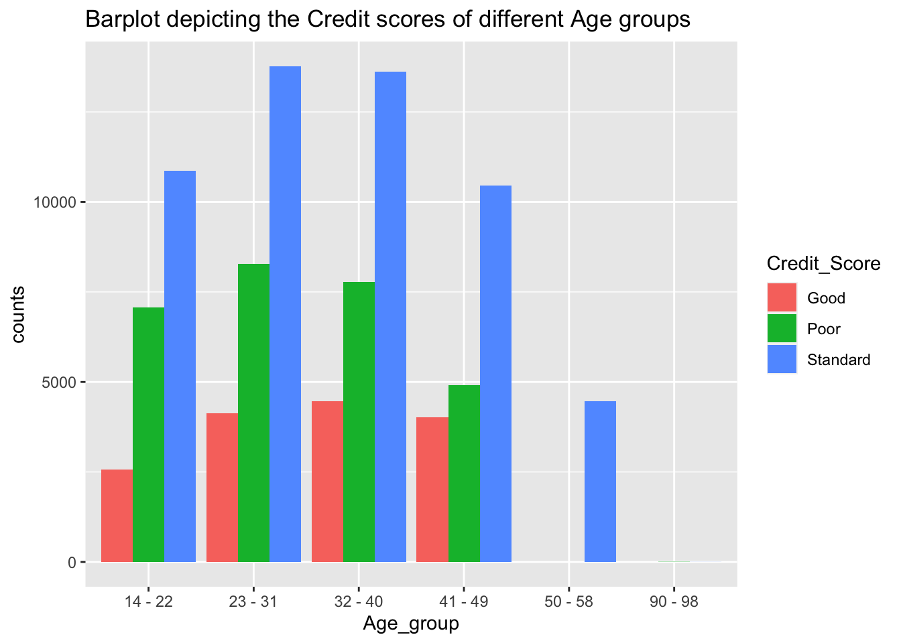
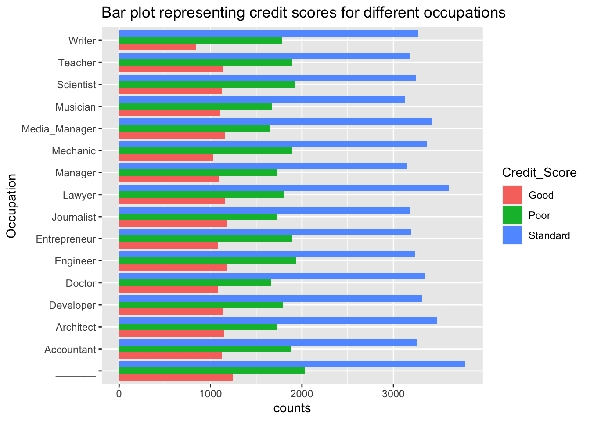
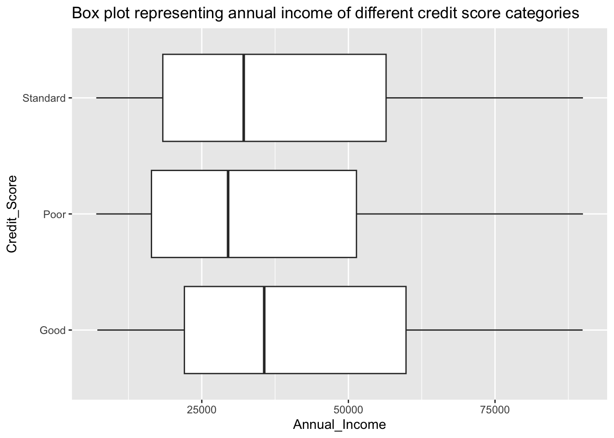
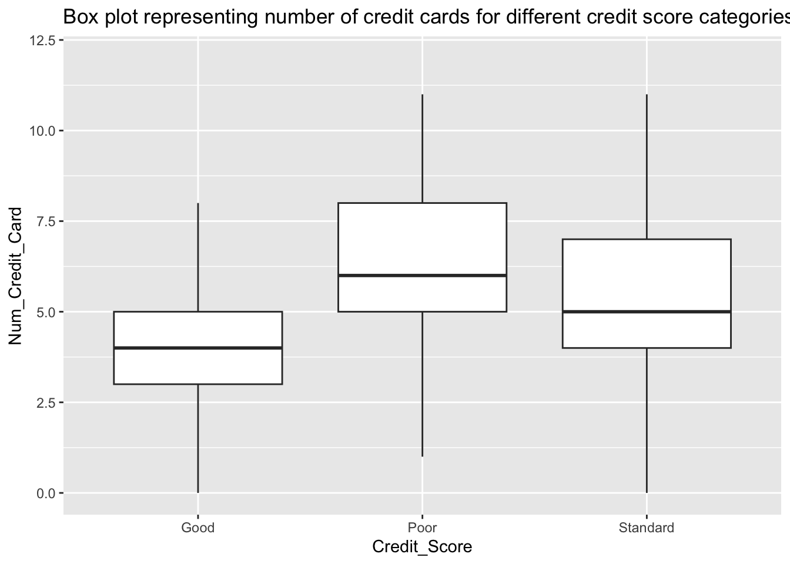
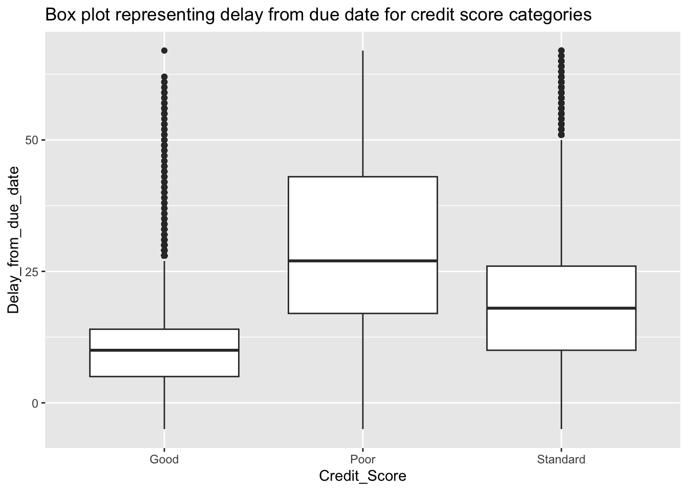
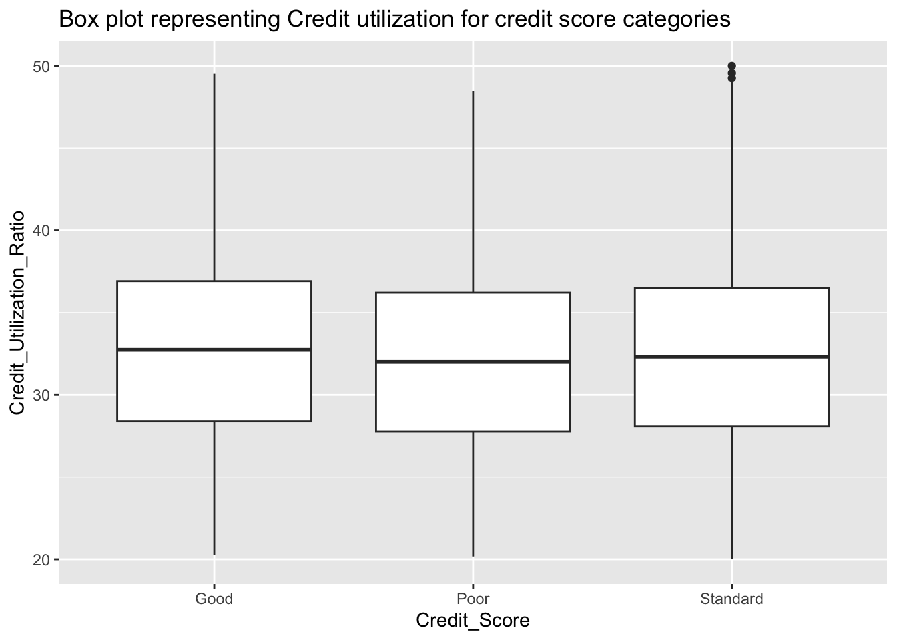
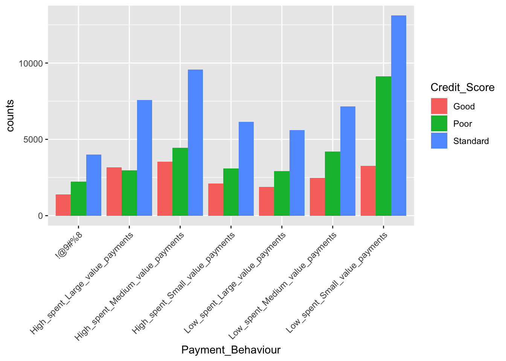

library(readr)
library(tidyverse)
library(ggplot2)
library(dplyr)
library(mosaic)
knitr::opts_chunk$set(echo = TRUE, warning=FALSE, message=FALSE)Final Project Assignment: Pranav Bharadwaj Komaravolu
final_Project
Impact of behavioral patterns and socio-economic factors on Credit score
Introduction
Credits play an important role in the modern society. They enhance the purchase power of the individuals, thus facilitating financial growth and in turn bolstering the global economies. One significant role of credit in society is providing access to capital for individuals and businesses. Many people rely on credit to finance significant purchases such as homes, cars, or education. By borrowing money through loans or mortgages, individuals can acquire assets and investments that may otherwise be unaffordable upfront. This access to credit allows people to meet their immediate needs and pursue their long-term aspirations. Credit cards have played a vital role in the easy accessibility of credit to the common man.
Although, defaulting on the repayment of credit can have significant and long-lasting consequences for individuals and their financial well-being. These effects can extend beyond the immediate financial repercussions and impact various aspects of one’s life, including credit history, financial opportunities, and overall financial stability. If such behavior is observed in masses it could also affect the economy of the country. In order to avoid such a catastrophe banks and financial institutions have come up with an indicator to represent the borrowing power of an individual, called the credit score. The credit score plays an important role in determining the societal well-being of an individual.
Through this project I would like to address the following questions:
What social parameters or behavioral patterns determine the credit score of an individual?
Is it possible for us to estimate the credit score given the required information?
Dataset Introduction
For this task I have identified the “Credit score classification” dataset on kaggle which was published by Rohan Paris. The number of available datasets for this task are very small in number and out of those datasets the current choice seemed more promising. This dataset is a collection of all the necessary and important information related to 12,500 different individuals and their corresponding credit score classification. This data appears to have been generated as a part of challenge on kaggle. The dataset comprises of 100,000 rows and 28 columns and it covers most of the necessary behavioral and social information of different individuals. Each row represents the individual’s financial behavior, societal status related information and a credit score category (“Good”, “Standard”, “Poor”).
Dataset Description
Reading the dataset
data <- read_csv("601_Spring_2023_project/PranavKomaravolu_FinalProjectData/train.csv", show_col_types = FALSE)
head(data)The dimensions of the dataset are as follows:
dim(data)[1] 100000 28It is a very vast dataset with 100,000 rows and 28 columns.
The column names are as follows:
colnames(data) [1] "ID" "Customer_ID"
[3] "Month" "Name"
[5] "Age" "SSN"
[7] "Occupation" "Annual_Income"
[9] "Monthly_Inhand_Salary" "Num_Bank_Accounts"
[11] "Num_Credit_Card" "Interest_Rate"
[13] "Num_of_Loan" "Type_of_Loan"
[15] "Delay_from_due_date" "Num_of_Delayed_Payment"
[17] "Changed_Credit_Limit" "Num_Credit_Inquiries"
[19] "Credit_Mix" "Outstanding_Debt"
[21] "Credit_Utilization_Ratio" "Credit_History_Age"
[23] "Payment_of_Min_Amount" "Total_EMI_per_month"
[25] "Amount_invested_monthly" "Payment_Behaviour"
[27] "Monthly_Balance" "Credit_Score" From the above list of columns we can observe that each row comprises of the detailed personal and behavioral information of the individual and the target column “Credit_Score” which indicates the credit score category in which an individual lies in.
The credit score of an individual is being divided into the following categories:
unique(data$Credit_Score)[1] "Good" "Standard" "Poor" So there appears to be three categories good, standard and poor and in this project we try to find the impact of various other attributes on the credit score. But from the head of the data shown above we can see some inconsistencies and absence of certain column values for some rows in the dataset. This require some preprocessing for accurate analysis.
Cleaning the dataset
First we can try to identify the null fields and the number of rows that have them. If there are a significant number of rows with null fields then we’ll try to fill these with relevant information, else if they occur in very small numbers we can omit them directly.
The number of rows with empty fields can be obtained as follows:
nrow(data[!complete.cases(data), ])[1] 46957We can observe that there are 46,957 rows with inconsistencies.
In this Customer_ID is the primary identifier for an individual and if it is null we’ll have to omit these rows entirely.
nrow(data[is.na(data$Customer_ID), ])[1] 0Fortunately none of the rows have an empty value for the identifier field. Now we can proceed with removing the columns that will have no affect on the final outcome. From the above set of columns the field “Name”, “SSN”, “ID” can be removed from our consideration as the field Customer_ID already identify the individual.
data <- data %>%
select(-Name, -SSN, -ID)From the above head of the data we can see that the Age column it is currently storing strings but ideally it should be storing integers, so now we will have to typecast the column to integer.
Cleaning Age column
First we’ll have to check for empty age columns in the dataset:
nrow(data[is.na(data$Age), ])[1] 0Typecasting the Age column to integer
data$Age <- as.integer(gsub("[^-?0-9]+", "", data$Age))But here some distorted age values are unusually high, this needs to be handled, it can be done as follows:
We can handle the out of range Age values (here I assumed 100 to be the maximum age) as follows:
data$Age[data$Age < 0 | data$Age > 100] <- NANow we replace all null values with other occurrences that have similar Customer_ID.
temp <- data %>%
select(Customer_ID, Age)
temp <- na.omit(temp)
data <- transform(data, Age=temp$Age[match(data$Customer_ID, temp$Customer_ID)])All the age values appear to have been corrected, the summary of the Age field is as follows:
summary(data$Age) Min. 1st Qu. Median Mean 3rd Qu. Max.
14.00 24.00 33.00 33.03 41.00 95.00 Cleaning other columns
The Annual income column appears to have the same problem as that of Age, so similar processing steps can be taken:
data$Annual_Income <- as.numeric(gsub("[^-?0-9.-]+", "", data$Annual_Income))Now we clean the other columns that are already in the right data type but were fed as NA
## Replacing the unusually high values with a median values
data$Num_Bank_Accounts[data$Num_Bank_Accounts > 100] <- 5
data$Num_Credit_Card[data$Num_Credit_Card > 100] <- 5
data$Interest_Rate[data$Interest_Rate > 100] <- 13
data$Type_of_Loan[is.na(data$Type_of_Loan)] <- "Not Specified"
data$Monthly_Balance[is.na(data$Monthly_Balance)] <- 0
data$Num_Credit_Inquiries[is.na(data$Num_Credit_Inquiries)] <- 6
data$Monthly_Inhand_Salary[is.na(data$Monthly_Inhand_Salary)] <- 0
data$Monthly_Balance[is.na(data$Monthly_Balance)] <- 0Now we’ll need to convert the numerical attributes that are wrongly read as string to numerical values:
# for months with na I assumed that the salary was not credited
data$Num_of_Loan <- as.integer(gsub("[^-?0-9]+", "", data$Num_of_Loan))
data$Changed_Credit_Limit <- as.numeric(gsub("[^-?0-9.-]+", "", data$Changed_Credit_Limit))
data$Changed_Credit_Limit[is.na(data$Changed_Credit_Limit)] <- 9.4 # the median of the entire dataset
data$Type_of_Loan[is.na(data$Type_of_Loan)] <- "Not Specified"
data$Num_of_Delayed_Payment <- as.integer(gsub("[^-?0-9]+", "", data$Num_of_Delayed_Payment))
data$Num_of_Delayed_Payment[is.na(data$Num_of_Delayed_Payment)] <- 0
data$Num_Credit_Inquiries[is.na(data$Num_Credit_Inquiries)] <- 0
data$Outstanding_Debt <- as.numeric(gsub("[^-?0-9.-]+", "", data$Outstanding_Debt))
data$Amount_invested_monthly <- as.numeric(gsub("[^-?0-9.-]+", "", data$Amount_invested_monthly))
data$Amount_invested_monthly[is.na(data$Amount_invested_monthly)] <- 0Now we are left with the pre-processing of the “Credit_History_Age” column in the dataset. It has a unique composition of both text and numbers so I will be processing the string and generating a single integer that represents the credit history age in number of months.
getCreditAge <- function(x) {
if(!is.na(x)) {
arr <- strsplit(x, split=" ")
return (as.integer(arr[[1]][1])*12+as.integer(arr[[1]][4]))
}
else {
return (NA)
}
}
data$Credit_History_Age <- sapply(data$Credit_History_Age, getCreditAge)Despite all the preprocessing we can still observe some NA’s in the “Credit_History_Age” column. Here replacing all the missing columns with zeros would not be ideal as by glancing through the dataset have a minimum of 1 month’s credit history. So utilizing the same strategy as above we can replace all such columns with median (219 months) of all the values in the dataset.
data$Credit_History_Age[is.na(data$Credit_History_Age)] <- 219The total number of complete instances after preprocessing is as follows:
nrow(data[complete.cases(data$Credit_History_Age), ])[1] 100000So we managed to obtain all 100,000 instance with a complete set of attributes. The head of the dataset is as follows:
head(data, 100)Analysis Plan
Firstly, we are trying to address the research question of which social/societal parameters such as: “Occupation”, “Age”, “Annual_Income” or “Monthly_Inhand_Salary” affect the decision of credit score category assigned to a person. Through this, we can determine what role social status plays in credit approval by banks and other financial organizations. We can plot bar graphs, box plots, and scatter plots to analyze the correlation between societal parameters and credit scores.
Then, we analyze the impact of behavioral patterns such as: “Num_Credit_Card”, “Num_of_Loan”, “Type_of_Loan”, “Delay_from_due_date” and many other similar parameters on the Credit score of an individual.
After analyzing the two types of features and their impact on Credit scores, we will identify attributes that provide the most information about an individual and whether it will be ideal to model the data with these attributes as inputs.
Descriptive Statistics
I will be evaluating both the societal parameters and behavioral parameters and their correlation with Credit_Score field.
Societal Parameters
These parameters represent the individuals biographic information in the society. This information is critical as it helps in generalizing trends for a large group of individuals in the society. The attributes I will be evaluating are as follows:
- Age
It is an important measure for identifying different groups of the population. The summary of Age is as follows:
summary(data$Age) Min. 1st Qu. Median Mean 3rd Qu. Max.
14.00 24.00 33.00 33.03 41.00 95.00 So the minimum age in the dataset appears to be 14 years and the maximum being 95 years. The mean age of the population being 33.03 years and the median also being 33.
- Occupation
The occupation represents role of a person in the society.
There are the following occupations are present in the dataset:
unique(data$Occupation) [1] "Scientist" "_______" "Teacher" "Engineer"
[5] "Entrepreneur" "Developer" "Lawyer" "Media_Manager"
[9] "Doctor" "Journalist" "Manager" "Accountant"
[13] "Musician" "Mechanic" "Writer" "Architect" So there appears to be 16 different profession where one profession “_______” represents unemployed status. The counts of individual professions are as follows:
find_mode <- function(x) {
u <- unique(x)
tab <- tabulate(match(x, u))
u[tab == max(tab)]
}
combined_data <- data%>%
group_by(Customer_ID)%>%
summarise(profession = find_mode(Occupation)) %>%
select(Customer_ID, profession)%>%
group_by(profession)%>%
summarise(counts = n())
head(combined_data, 100)So here is a distribution of different individuals across various professions.
- Annual Income The annual income is an important decider when it comes to credit score as it determines the amount of money a person can repay in an years time.
summary(data$Annual_Income) Min. 1st Qu. Median Mean 3rd Qu. Max.
7006 19458 37579 176416 72791 24198062 We can observe a very large disparity in the minimum and maximum annual income earned by an individual.
Behavioral parameters
There are more than 15 behavioral parameters that indicate the credit habits of the individuals. Of these attributes I picked the following to perform EDA:
- Num_Credit_Card This attribute indicates the number of credit cards used by an individual. The summary of this field is as follows:
summary(data$Num_Credit_Card) Min. 1st Qu. Median Mean 3rd Qu. Max.
0.000 4.000 5.000 5.595 7.000 100.000 We do see some kind of disparity but the mean number of cards appears to be \(\approx 5\) per individual.
- Delay_from_due_date This is an interesting as well as an important metric as it helps in predicting defaults in credit repayment. The delay in the repayment of monthly credit varies as follows:
summary(data$Delay_from_due_date) Min. 1st Qu. Median Mean 3rd Qu. Max.
-5.00 10.00 18.00 21.07 28.00 67.00 It ranges from -5 days probably indicating an early payment to 67 days with the mean being around 21 days.
- Credit_Utilization_Ratio It indicates the percentage of credit limit a person has utilized during a given month. The utilization ratios vary as follows:
summary(data$Credit_Utilization_Ratio) Min. 1st Qu. Median Mean 3rd Qu. Max.
20.00 28.05 32.31 32.29 36.50 50.00 As we can see from the above summary it ranges from 20% to 50%.
- Payment_Behavior It represents the nature of spending that was done during a month. The different kinds of behavior categories are as follows:
unique(data$Payment_Behaviour)[1] "High_spent_Small_value_payments" "Low_spent_Large_value_payments"
[3] "Low_spent_Medium_value_payments" "Low_spent_Small_value_payments"
[5] "High_spent_Medium_value_payments" "!@9#%8"
[7] "High_spent_Large_value_payments" There are 7 different categories and their occurences in the dataset are as follows:
behavior_data <- data%>%
group_by(Payment_Behaviour)%>%
summarise(counts = n())
head(behavior_data)The dataset appears to cover different types of spending behavior almost equitablly.
Results: Analysis and Visualization
As we discussed in the earlier sections we will be performing exploratory data analysis on two different kinds of attributes and their correlation to the Credit_Score.
Exploratory Data Analysis for Societal parameters
Age
Firstly, we want analyze which age group has the highest number of good credit scores and then decide based on the data which age group performs the best. For this we can observe the data well on a barpolt where different age groups have their corresponding bars for each of the credit score categories.
age_data <- data%>%
group_by(Age, Credit_Score)%>%
summarise(counts= n())
unique(age_data$Age) [1] 14 15 16 17 18 19 20 21 22 23 24 25 26 27 28 29 30 31 32 33 34 35 36 37 38
[26] 39 40 41 42 43 44 45 46 47 48 49 50 51 52 53 54 55 56 95Since there are a large number of ages in the data we can group them as follows:
# let's have a window of size 8 then
window_sizes <- c(14, 23, 32, 41, 50, 90)
temp <- age_data%>%
pivot_wider(names_from = Credit_Score, values_from = counts)
temp1 <- temp%>%
filter(Age >= 14 & Age <= 22)%>%
group_by()%>%
summarise(Age_group = "14 - 22", Good = sum(Good), Poor = sum(Poor), Standard = sum(Standard))
temp2 <- temp%>%
filter(Age >= 23 & Age <= 31)%>%
group_by()%>%
summarise(Age_group = "23 - 31", Good = sum(Good), Poor = sum(Poor), Standard = sum(Standard))
temp3 <- temp%>%
filter(Age >= 32 & Age <= 40)%>%
group_by()%>%
summarise(Age_group = "32 - 40", Good = sum(Good), Poor = sum(Poor), Standard = sum(Standard))
temp4 <- temp%>%
filter(Age >= 41 & Age <= 49)%>%
group_by()%>%
summarise(Age_group = "41 - 49", Good = sum(Good), Poor = sum(Poor), Standard = sum(Standard))
temp5 <- temp%>%
filter(Age >= 50 & Age <= 58)%>%
group_by()%>%
summarise(Age_group = "50 - 58", Good = sum(Good), Poor = sum(Poor), Standard = sum(Standard))
temp6 <- temp%>%
filter(Age >= 90 & Age <= 98)%>%
group_by()%>%
summarise(Age_group = "90 - 98", Good = sum(Good), Poor = sum(Poor), Standard = sum(Standard))
df_list <- list(temp1, temp2, temp3, temp4, temp5, temp6)
age_data <- df_list %>% reduce(full_join, by= c('Age_group', 'Good', 'Poor', 'Standard'))Now we perform pivot longer to re-adjust the data for the bar plot.
age_data <- age_data%>%
pivot_longer(!Age_group, names_to = 'Credit_Score', values_to = 'counts')
age_data$counts[is.na(age_data$counts)] <- 0
head(age_data, 100)The bar plot is as follows:
ggplot(age_data)+
geom_bar(aes(x=Age_group, y = counts, fill=Credit_Score), stat = "identity", position = "dodge")+
labs(title = "Barplot depicting the Credit scores of different Age groups")
From the above plot we can observe that the majority of the population lie in the standard category. While upon detailed observation the age groups of 23-31 appear to have the best credit scores which is followed by age groups 32-40, then followed by 14-22 and later we observe the remaining age groups 41-49, 50-58 and 90-98 respectively. This data appears to make sense as the majority of the population in the age group 23-31 represent the working class hence the high credit score.
Occupation
From the previous section we observed that there are 16 types of professions in the dataset. Now we can plot a bar plot to analyze each of the professions and their corressponding credit scores.
The data for the bar plot can be obtained as follows:
occupation_data <- data%>%
group_by(Occupation, Credit_Score)%>%
summarise(counts = n())
head(occupation_data, 100)Now we can plot the bar plots to observe the correlation between occupation and credit score.
ggplot(occupation_data)+
geom_bar(aes(x = Occupation, y = counts, fill = Credit_Score), stat = "identity", position = "dodge")+
coord_flip()+
labs(title = "Bar plot representing credit scores for different occupations")
Similar to the above plot we can observe that the majority of the individuals lie in the standard category. But when it comes to high credit scores we can see that some occupations tend to perform better than the rest of the professions. Them being: “_________”, “Engineer”, “Media Manager”, “Lawyer”.
Annual Income
Here we analyze the distributions of annual income for different credit categories. We can do this by plotting box plots for the three of the categories and analyzing the distributions.
The data for the box plot can be obtained as follows:
income_data <- data%>%
select(Customer_ID, Annual_Income, Credit_Score)
#income_data <- unique(income_data)
income_data <- income_data%>%
select(-Customer_ID)
head(income_data, 100)Now we can plot the box plots for the above data:
ggplot(income_data)+
geom_boxplot(aes(x=Credit_Score, y=Annual_Income), outlier.shape = NA)+
coord_flip()+
labs(title = "Box plot representing annual income of different credit score categories")+
scale_y_continuous(limits = c(7006, 90000))
From the above box plots, we can observe that individuals with good credit scores tend to have higher annual income than those with standard credit score who are then followed by those with poor credit scores. The dataset has a very high number of outliers.
Exploratory Data Analysis for Behavioral parameters
Here we will be analyzing the impact of behavioral parameters on credit score.
Number of Credit Cards
One of the most common assumption is that the Credit Score of an individual is directly proportional to the number of credit cards used by the individual. Now we try to find whether that assumption is true for the current dataset or not. There were a lot of NA’s in the initial dataset which were later replaced using the median of the distribution. We can analyze this by plotting a box plot and identifying the distributions of number of credit cards for each of the credit score categories.
The data for the box plot is as follows:
creditcard_data <- data%>%
select(Num_Credit_Card, Credit_Score)
head(creditcard_data, 100)Now we have the required data so we can proceed with the plotting of the box plot:
ggplot(creditcard_data)+
geom_boxplot(aes(x= Credit_Score, y = Num_Credit_Card), outlier.shape = NA)+
labs(title = "Box plot representing number of credit cards for different credit score categories")+
scale_y_continuous(limits = c(0, 12))
The assumption does not hold for this dataset as people with less number of credit cards appear to have higher credit scores than those with more number of credit cards.
Delay from Due Date
This attribute represents the number of days after the due date after which the credit card bill was paid by the individual. We can analyze this using a box plot for delay from due date and credit score. Ideally the longer the delay in credit repayment the lower will be the credit score.
The data for the box plot can be obtained as follows:
delay_data <- data%>%
select(Delay_from_due_date, Credit_Score)
head(delay_data, 100)We can observe some values being negative which indicate the early payment of the bill by the customer. The box plot for the data is as follows:
ggplot(delay_data)+
geom_boxplot(aes(x=Credit_Score, y=Delay_from_due_date))+
labs(title = "Box plot representing delay from due date for credit score categories")
We observe an expected trend showing clear disparity between the distributions of the three different Credit_Score categories. Here we observe the credit score category good to have lower number of delayed days than that of standard which is then followed by poor.
Credit Utilization Ratio
Credit utilization ratio represents the amount of credit utilized by a person divided by the credit limit that was assigned to the person. There are many different opinions on how this parameter affects the attribute. Some believe that a credit utilization under 30% improves the credit score while some deny this. We can try to verify whether this under 30% assumption is valid for the current datset or not. This can be analyzed using a box plots for different credit score categories.
The data for the box plot can be obtained as follows:
utilization_data <- data%>%
select(Credit_Utilization_Ratio, Credit_Score)
head(utilization_data, 100)Now we can plot the box plot as follows:
ggplot(utilization_data)+
geom_boxplot(aes(x=Credit_Score, y=Credit_Utilization_Ratio))+
labs(title = "Box plot representing Credit utilization for credit score categories")
There is no significant difference between three Credit score categories. The utilization seems to be slightly higher for the good category, the other two categories has almost similar distribution.
Payment Behavior
The credit score is also dependent on how the credit is being utilized. That is how much credit and in what kind of payments. To observe the correlation of payment behavior with the credit score we can utilize bar plots.
The data for the barplot can be obtained as follows:
payment_data <- data%>%
group_by(Payment_Behaviour, Credit_Score)%>%
summarise(counts = n())
head(payment_data, 100)Now we can plot the bar plot as follows:
ggplot(payment_data)+
geom_bar(aes(x = Payment_Behaviour, y=counts, fill=Credit_Score), stat = "identity", position = "dodge")+
theme(axis.text.x = element_text(angle = 45, hjust = 1))
Therefore individuals who spent high in the form of medium valued payments appear to have higher credit score. But when it comes to the people having poor or standard credit scores appear to spend low in the form of small valued payments.
Conclusions & Discussion
The calculation of credit score involves collection of large amount of information about an individual and some set of complex algorithms that are developed and updated by the credit bureaus. This score determines the individuals purchasing power and access in the society. Through this paper, I tried to understand how this calculation is performed and what kind of factors affect it the most. The answers to the initially mentioned research questions are as follows:
- What social parameters or behavioral patterns determine the credit score of an individual?
In this project I analyzed 7 parameter of which three of these were social parameters and four of these were behavioral patterns. I observed the following from the experiments:
The age of the person appears to impact the credit score as the individuals closer to the median age groups of the working class have higher credit scores as compared to those who are either younger or older. This could be due to the fact that most of the individuals in these age groups are skilled and employed.
Upon analysis of the occupation being a deciding factor for credit score, I found that some professions in the society tend to tend to favor higher credit scores.
The Annual income of an individual clearly affects the credit score as from the dataset we can observe a clear disparity in the income of individuals with good credit scores as compared to those with poor credit scores.
When it comes to number of credit cards, we observe that the people with higher credit scores tend to have less number of credit cards as compared to those with standard and poor credit scores.
The delay in repayment of credit had a clear impact on the credit score as we observed that longer delays lead to lower credit scores.
When it comes to credit utilization we do not observe a significant affect on the credit score.
The payment behavior seems to affect the credit score significantly.
Therefore 6 out of the 7 parameters analyzed tend to have a significant affect on how the credit score is calculated.
- Is it possible for us to estimate the credit score given the required information?
From the above analysis, we can conclude that it is possible to estimate the credit score of an individual given certain bigrahic information and financial behavioral patterns.
Bibliography
- Paris, Rohan. “Credit Score Classification.” Kaggle, 22 June 2022, www.kaggle.com/datasets/parisrohan/credit-score-classification. [Accessed: 22-May-2023]
- J. Lohokare, R. Dani and S. Sontakke, “Automated data collection for credit score calculation based on financial transactions and social media,” 2017 International Conference on Emerging Trends & Innovation in ICT (ICEI), Pune, India, 2017, pp. 134-138, doi: 10.1109/ETIICT.2017.7977024.
- R, The Comprehensive R Archive Network, https://cran.r-project.org/. [Accessed: 22-May-2023]